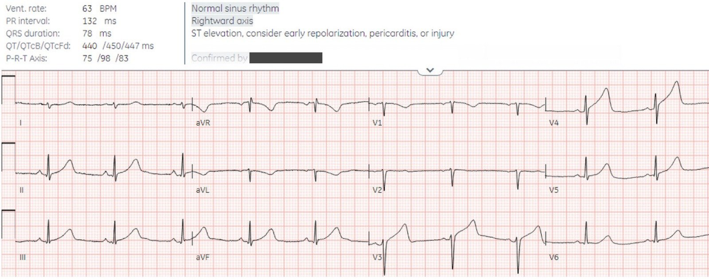
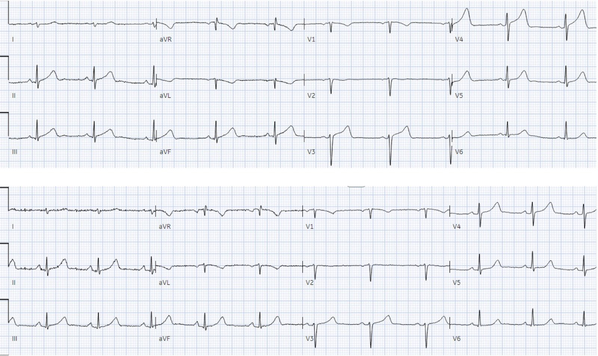
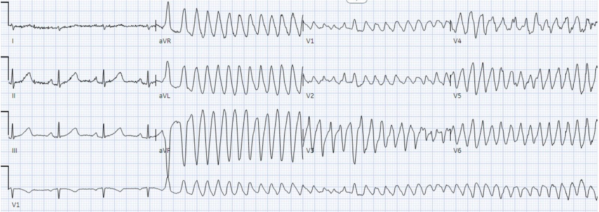
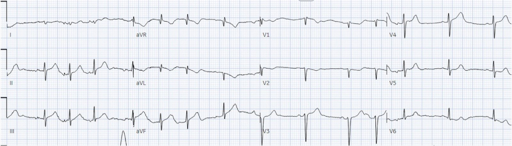
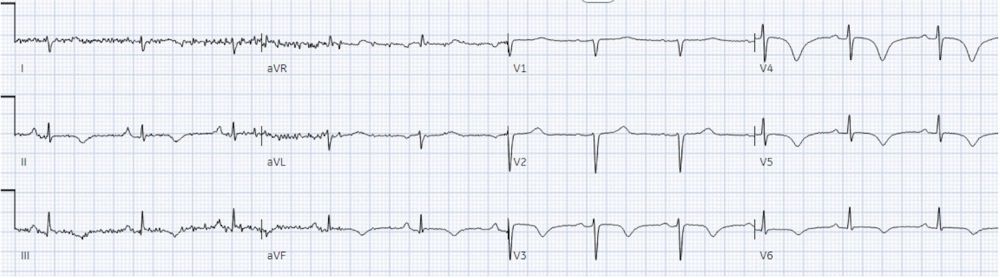
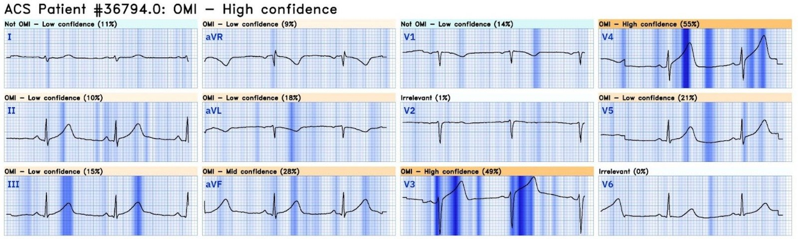
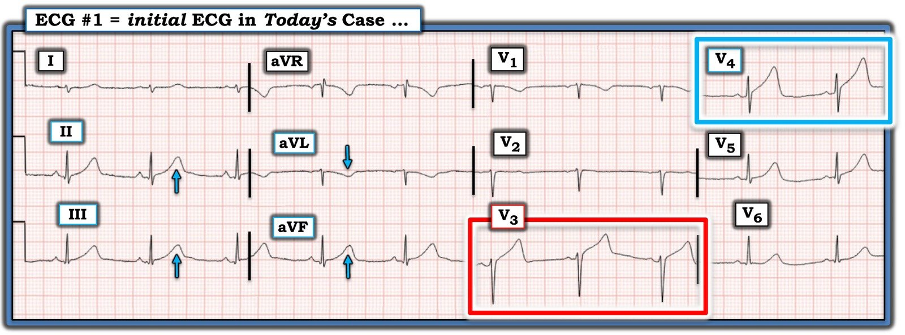
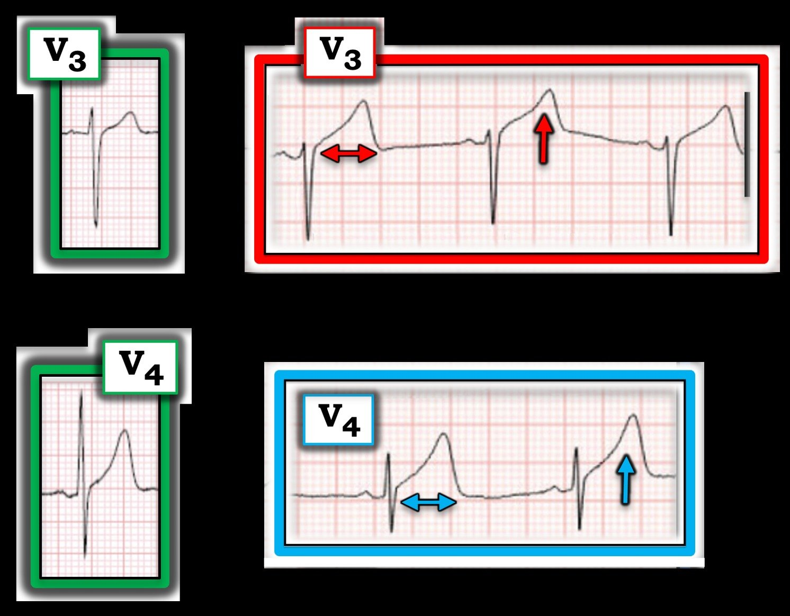

27/09/2024 — Người 45 tuổi khỏe mạnh bị đau ngực: tái cực sớm, viêm màng ngoài tim hay tổn thương?
Bản dịch tiếng Việt của bài "Healthy 45-year-old with chest pain: early repolarization, pericarditis or injury?" – Dr. Smith’s ECG Blog. Giữ nguyên toàn bộ 9 hình ảnh của bản gốc.
Gửi bởi BS. George Mastoras (Twitter @georgemastoras), viết bởi Jesse McLaren
Đang là một ngày bận rộn ở khoa cấp cứu (ED) thì bạn lại được gửi thêm một điện tâm đồ cần ký duyệt của một bệnh nhân ở khu phân loại (triage). Một phụ nữ 45 tuổi khỏe mạnh đến khám vì đau ngực, dấu hiệu sinh tồn bình thường. Kết quả đọc bằng máy tính là “ST chênh lên, cân nhắc tái cực sớm, viêm màng ngoài tim hoặc tổn thương.” Bạn nghĩ sao? Chỉ một trong các khả năng này là đáng lo ngại, vậy bệnh nhân nên ở lại phòng chờ cho đến khi có giường, hay cần được khám ngay lập tức?


Nhịp xoang bình thường, dẫn truyền bình thường, trục lệch phải mức giới hạn, và điện thế bình thường. Sóng R ở các chuyển đạo trước nhỏ, nhưng các điện cực có thể đã được đặt quá cao vì sóng P đảo ngược ở V1 và hai pha ở V2. Có ST chênh lên nhẹ dạng lõm và sóng T tối cấp (hyperacute T waves) ở V3 và đặc biệt là V4, cùng các sóng tối cấp kín đáo hơn ở các chuyển đạo dưới. Có sóng T đảo ngược (TWI) ở aVL nhưng sóng này đồng hướng với QRS của nó.
Kết quả đọc cuối cùng của bác sĩ tim mạch xác nhận kết quả đọc bằng máy tính là “ST chênh lên, cân nhắc tái cực sớm, viêm màng ngoài tim hoặc tổn thương”. Nhưng đó là khả năng nào?
- Tái cực sớm/biến thể bình thường có ST chênh lên và sóng T tương xứng với điện thế cao. Nhưng ở đây điện thế bình thường, và ST chênh lên cùng sóng T lớn không tương xứng so với QRS – bao gồm một sóng T gần lớn bằng toàn bộ QRS ở V4 – nên đây không phải là bình thường
- Viêm màng ngoài tim có ST chênh lên lan tỏa nguyên phát mà không ảnh hưởng đến sóng T – nhưng ở đây có sóng T tối cấp khu trú theo phân bố trước-dưới – nên đây không phải là viêm màng ngoài tim
- OMI (nhồi máu cơ tim do tắc): điện tâm đồ không được ghi là ‘STEMI’ vì chỉ có ST chênh lên ở mức giới hạn, và không có thay đổi soi gương (reciprocal change) ở chuyển đạo dưới vốn thường đi kèm STEMI thành trước. Nhưng thay đổi soi gương ở chuyển đạo dưới trong tắc LAD chủ yếu gặp khi chỗ tắc nằm ở đoạn gần so với nhánh chéo thứ nhất, trong khi tắc LAD đoạn giữa thường không ảnh hưởng đến các chuyển đạo dưới, còn tắc LAD đoạn xa có thể gây ST chênh lên/sóng T tối cấp ở chuyển đạo dưới như trong ca này
Như vậy bệnh nhân đau ngực này có sóng T tối cấp ở II, III, aVF và V3-V5, điều này loại trừ tái cực sớm và viêm màng ngoài tim và có giá trị chẩn đoán OMI – với phân bố gợi ý LAD đoạn xa. Đây là OMI mỏm — cả thành dưới và thành trước, thường do LAD đoạn xa, thường là một LAD vòng xuống thành dưới, tức “LAD vòng qua mỏm” (wraparound LAD).
BS. Mastoras lập tức nhận ra sóng T tối cấp, và đưa bệnh nhân vào phòng để đánh giá thêm. Bệnh nhân trước đây khỏe mạnh, không có yếu tố nguy cơ xơ vữa động mạch, và xuất hiện đau ngực sau một đợt căng thẳng (stress). Cơn đau sau xương ức kiểu đè ép, lan ra hai tay và kèm choáng váng. Trong lúc đánh giá ban đầu, bệnh nhân được dùng nitro và aspirin, triệu chứng hết, và được ghi các điện tâm đồ liên tiếp:


Sóng T tối cấp đã “xẹp” xuống – chứng minh đây là OMI thoáng qua, chứ không phải tái cực sớm hay viêm màng ngoài tim.
Sau đó bệnh nhân đột ngột mất đáp ứng trong khi đang ghi một điện tâm đồ khác:


VT đa dạng (polymorphic VT) xuất hiện sau một khoảng QT bình thường. Vì vậy đây không phải “xoắn đỉnh” (VT đa dạng + QT dài) mà là VT đa dạng do thiếu máu cục bộ. Bệnh nhân được sốc điện chuyển nhịp ngay lập tức về nhịp xoang và tỉnh lại.
Bình luận của Smith: Rung thất trông giống hệt VT đa dạng. Vì vậy là cái này hay cái kia sẽ phụ thuộc vào 3 yếu tố: 1) QT dài trước đó, 2) tự chuyển nhịp, và 3) có hay không có mạch. Một bệnh nhân bất tỉnh nhiều khả năng không có mạch và vì vậy đây là rung thất. Mặt khác, khi không có mạch thì không có khác biệt về điều trị: cần khử rung (không phải sốc điện chuyển nhịp đồng bộ).
Đây là điện tâm đồ sau sốc điện:


Bác sĩ tim mạch được gọi khẩn vì VT do thiếu máu cục bộ, nghi SCAD hay tắc do huyết khối hay co thắt mạch vành.
Phòng thông tim (cath lab) được kích hoạt: Không có bệnh động mạch vành, nhưng có bóc tách động mạch vành tự phát (SCAD) ở LAD đoạn xa, gây hẹp 95%, và được điều trị nội khoa. Siêu âm tim cho thấy EF 50% với mỏm vô động. Troponin đầu tiên là 90 ng/L (bình thường <16 ở nữ) và đỉnh là 7.400 ng/L. Điện tâm đồ lúc ra viện cho thấy sóng T đảo ngược tái tưới máu ở thành trước-dưới:


Nếu điện tâm đồ ban đầu được ký duyệt là “STEMI âm tính” thì bệnh nhân đã có thể ngừng tim trong phòng chờ, với kết cục tim mạch và thần kinh xấu. Nhưng vì BS. Mastoras nhận ra sóng T tối cấp, bệnh nhân được khám ngay, VT đa dạng được khử rung ngay lập tức, và bệnh nhân được chẩn đoán và điều trị nhanh chóng.
Không cần bối cảnh lâm sàng, Queen of Hearts đã nhận diện OMI với độ tin cậy cao, dựa trên các sóng tối cấp.


Bấm vào đây để đăng ký truy cập Queen of Hearts
Điều cần nhớ
- Tắc LAD có thể bị bỏ sót khi ST chênh lên rất ít, dạng lõm và không có thay đổi soi gương ở chuyển đạo dưới
- Sóng T tối cấp giúp loại trừ biến thể bình thường hoặc viêm màng ngoài tim và nhận diện OMI STEMI âm tính (STEMI(-)OMI)
- Tắc LAD đoạn xa gây ST chênh lên (STE)/sóng T tối cấp ở thành trước-dưới
- Phụ nữ trẻ không có yếu tố nguy cơ xơ vữa động mạch có nguy cơ bị chậm chẩn đoán nhồi máu cơ tim, nhưng đây lại chính là nhóm kinh điển bị nhồi máu cơ tim thứ phát do SCAD

===================================
BÌNH LUẬN CỦA TÔI, bởi KEN GRAUER, MD (27/9/2024):
===================================
Câu hỏi quan trọng được BS. McLaren đặt ra ở trên — cụ thể là, nếu đang làm một ca trực bận rộn ở khoa cấp cứu và được đưa xem điện tâm đồ ban đầu trong ca hôm nay (mà tôi đã sao lại ở Hình 1) — Bệnh nhân này có cần được khám ngay lập tức không?
Để đẩy câu hỏi của BS. McLaren lên một tầm cao hơn:
- Bạn cần bao lâu để biết rằng người phụ nữ 45 tuổi trước đây khỏe mạnh này với CP (Chest Pain – đau ngực) mới xuất hiện đang bị OMI cấp — ít nhất là cho đến khi bạn chứng minh được điều ngược lại?


Cần Bao Lâu?
Như BS. McLaren đã nêu — OMI đã được chẩn đoán đúng trong ca hôm nay. Điểm chính trong Bình luận của tôi — là tôi mất chưa đến 5 giây theo đúng nghĩa đen để biết rằng sẽ cần thông tim sớm. Tôi dựa vào những điều sau:
- Bệnh sử đáng lo ngại: Người phụ nữ 45 tuổi trước đây khỏe mạnh này đột ngột đau sau xương ức kiểu đè ép lan ra hai tay, kèm choáng váng.
- Khi biết bệnh sử này, rồi nhìn thấy điện tâm đồ #1 — sự chú ý của tôi ngay lập tức bị hút vào sóng ST-T ở chuyển đạo V3 (trong hình chữ nhật ĐỎ ở Hình 1). Chúng ta nên nhận ra ngay tức thì rằng hình dạng của sóng ST-T ở chuyển đạo này “không ổn”. Tức là — sóng T ở V3 quá lớn, “béo” hơn ở đỉnh và đặc biệt rộng hơn ở chân so với mức đáng có khi xét kích thước tương đối của QRS ở chuyển đạo này.
- Để tự khẳng định rằng hình dạng bất thường của sóng ST-T ở chuyển đạo V3 là “thật” (chứ không phải do nhiễu hay một thay đổi tái cực) — “mắt” tôi tiếp theo hướng tới sóng ST-T ở chuyển đạo V4 kế cận (trong hình chữ nhật XANH ở Hình 1) — cho thấy rõ một sóng ST-T không tương xứng, lớn đến mức “nuốt chửng” sóng R kích thước vừa phải ở chuyển đạo này.
Kết luận:
- Với bệnh sử CP dữ dội, mới khởi phát và sự hiện diện của sóng T trông tối cấp ở các chuyển đạo V3 và V4 — tôi biết không đời nào bệnh nhân này lại không cần đánh giá đầy đủ, và rất có thể là thông tim sớm.
- Tổng THỜI GIAN để đi đến kết luận này: Đúng nghĩa đen, chưa đến 5 giây.
Rõ ràng, còn có những dấu hiệu đáng lo ngại khác trên điện tâm đồ ban đầu này (mà tôi điểm lại bên dưới). Nhưng điểm chính trong Bình luận của tôi là BS. Mastoras (người đã cung cấp ca hôm nay cho chúng ta) — đã nhanh chóng nhận ra sóng T tối cấp, điều mà ở một bệnh nhân có CP đột ngột, mới xuất hiện và dữ dội — đòi hỏi phải đánh giá thêm ngay lập tức.
Một bức hình đáng giá 1.000 chữ:
Vậy tại sao ở bệnh nhân có CP mới xuất hiện này — sóng T ở các chuyển đạo V3,V4 của Hình 1 lại là tối cấp? Câu trả lời sẽ hiện ra ngay lập tức khi nhìn vào Hình 2:
- Các sóng ST-T của chuyển đạo V3,V4 bên trái (các chuyển đạo viền XANH LÁ) — được lấy từ một bản ghi bình thường. Có ST chênh lên nhẹ tại điểm J, với đoạn ST dốc lên thoai thoải và kết thúc bằng một sóng T dương, thanh mảnh.
- Tương phản với hình dạng ST-T bình thường ở các chuyển đạo viền XANH LÁ — là hình dạng sóng ST-T ở các chuyển đạo V3,V4 của điện tâm đồ ban đầu (lấy từ Hình 1) trong ca hôm nay. Chẳng phải các sóng ST-T trong hình chữ nhật ĐỎ và XANH rõ ràng “đồ sộ” hơn, với chân sóng T rộng hơn nhiều so với mức dự kiến khi biên độ QRS ở các chuyển đạo này chỉ vừa phải sao? Ở một bệnh nhân có CP đáng lo ngại — đây là sóng T tối cấp gợi ý OMI cho đến khi chứng minh được điều ngược lại.


Quay lại Hình 1: Những thay đổi khác trên điện tâm đồ là gì?
Sóng T tối cấp thì “quá đầy đặn” (hypervoluminous). Chúng lớn hơn mức chúng ta dự kiến khi xét biên độ tương đối của phức bộ QRS ở (các) chuyển đạo đang xem.
- Với những thay đổi tối cấp đã xác định ở chuyển đạo V3 và V4 của Hình 1 — tôi thích xem tiếp các chuyển đạo kế cận.
- Nếu còn chút nghi ngờ nào về hình dạng bất thường của sóng ST-T ở chuyển đạo V3 — nghi ngờ đó sẽ bị xóa tan khi thấy sóng ST-T dẹt đến mức nào ở chuyển đạo V2 kế cận. Đơn giản là không đời nào sự chuyển tiếp từ sóng ST-T dẹt ở V2 — sang những gì ta thấy trong hình chữ nhật ĐỎ ở chuyển đạo V3 — lại là bình thường.
- Với hình dạng tối cấp ở chuyển đạo V4 — tôi cho rằng sóng T ở các chuyển đạo V5,V6 bên kế cận đều “béo” hơn ở đỉnh so với bình thường. Và dù QRS rất nhỏ ở chuyển đạo I bên — Chẳng phải sóng T ở chuyển đạo I rộng hơn bạn dự kiến sao?
- Xin nhấn mạnh: Có thể tôi sẽ không cho rằng hình dạng sóng ST-T ở chuyển đạo V5,V6 là bất thường nếu mọi thứ khác trên bản ghi đều bình thường. Nhưng trong bối cảnh các chuyển đạo V3,V4 kế cận tối cấp — Chẳng phải hình dạng sóng ST-T ở chuyển đạo V5,V6 trông như phần nhạt dần của cùng một quá trình sao?
- Tương tự — các mũi tên XANH hướng lên ở mỗi chuyển đạo dưới làm nổi bật các sóng T “đồ sộ” hơn dự kiến.
- Cuối cùng — chuyển đạo aVL cho thấy sóng T đảo ngược soi gương với sóng T tối cấp ở các chuyển đạo dưới. Điều này quả thật kín đáo — nhưng chẳng phải sóng T đảo ngược ở chuyển đạo aVL rộng hơn dự kiến khi biên độ QRS ở chuyển đạo này nhỏ sao?
ĐIỀU CỐT LÕI: Ở bệnh nhân hôm nay (đến khám vì CP dữ dội mới khởi phát) — có thể nhận ra sóng T tối cấp ở các chuyển đạo V3,V4 trong vòng vài giây. Như đã mô tả ở trên — soi kỹ hơn các phần khác của bản ghi cho thấy bất thường sóng ST-T ở hầu như tất cả các chuyển đạo còn lại. Như BS. Mastoras đã nhận ra một cách tài tình — nhu cầu thông tim sớm nhanh chóng trở nên rõ ràng.
=================================
T.B. (P.S.): Điều thú vị là — người phụ nữ 45 tuổi trước đây khỏe mạnh trong ca hôm nay được phát hiện có SCAD (Spontaneous Coronary Artery Dissection – bóc tách động mạch vành tự phát) ở LAD đoạn xa, gây hẹp 95% vùng liên quan.
- Như BS. McLaren đã nêu — đặc điểm dân số học nêu trên của bệnh nhân hôm nay là điển hình cho một nhóm có tỷ lệ mắc cao hơn nhiều về việc SCAD là nguyên nhân gây biến cố cấp. Trong khi SCAD được tìm thấy ở ~1-4% tổng số ca chụp mạch vành thực hiện vì hội chứng vành cấp (ACS) — tỷ lệ này tăng lên hơn 30% ở phụ nữ trung niên. Nguy cơ SCAD còn cao hơn nữa trong thai kỳ — chiếm hơn 40% số ca chụp mạch vành thực hiện vì ACS trong giai đoạn chu sinh.
- Về mặt lâm sàng — tầm quan trọng của việc nhận ra SCAD là nguyên nhân gây ACS — là cách tiếp cận xử trí khác biệt, ở chỗ một cách tiếp cận bảo tồn (không PCI) thường được ưu tiên ở bệnh nhân ổn định huyết động có dòng chảy TIMI tốt. (Để biết thêm về chủ đề này — Xem phần bàn luận trong các bài ngày 24 tháng Mười năm 2019 và ngày 31 tháng Bảy năm 2018 trên Dr. Smith’s ECG Blog).